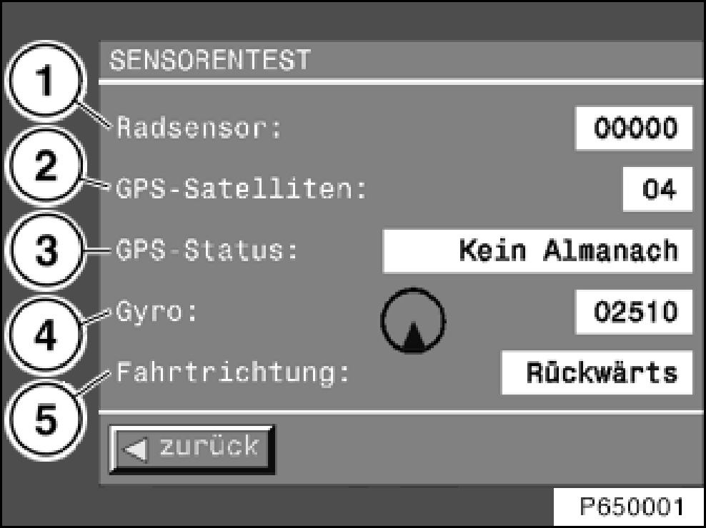
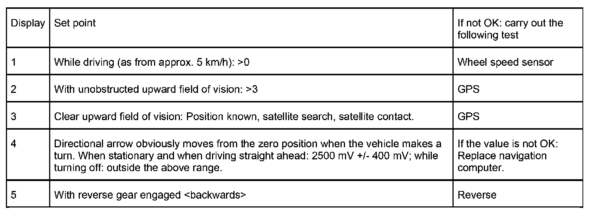
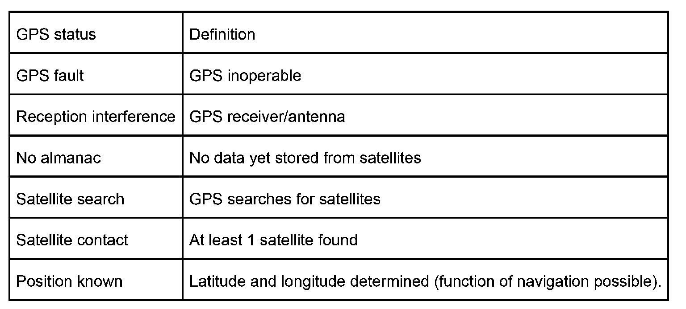

Initial Inspection and Diagnostic Overview
Sensor Test Navigation System
Information is shown in the LC display.
The sensor test can be selected as follows:
- Selection - main menu
- Selection - settings
- Press and hold the "MENU" button longer than 8 s in the settings mask
- Select sensor test
The following mask then appears in the display

- 1 wheel-speed sensor, number of impulse of the engine speed sensor per minute, left and right wheel.
(on the E46 only the signal of the left rear wheel is used, on the E53 of the left front wheel).
- 2 Number of satellites currently received by GPS
- 3 GPS status
- 4 directional arrow; voltage delivered by the gyro sensor in mV.
- 5 Direction of travel forward/reverse
Function test
- Select sensor test
- Drive several small diameter circles with the vehicle outdoors
- Observe displays/indicators for sensor test

Definition GPS status

Meaning of almanac: After applying supply voltage terminal 30, terminal R and making satellite contact, data from satellites is collected and stored in the GPS receiver. If this data is missing, e.g. due to disconnection of the battery or of the GPS receiver, the vehicle must be placed outdoors with a clear view upwards and terminal R switched on (approx. 15 minutes).